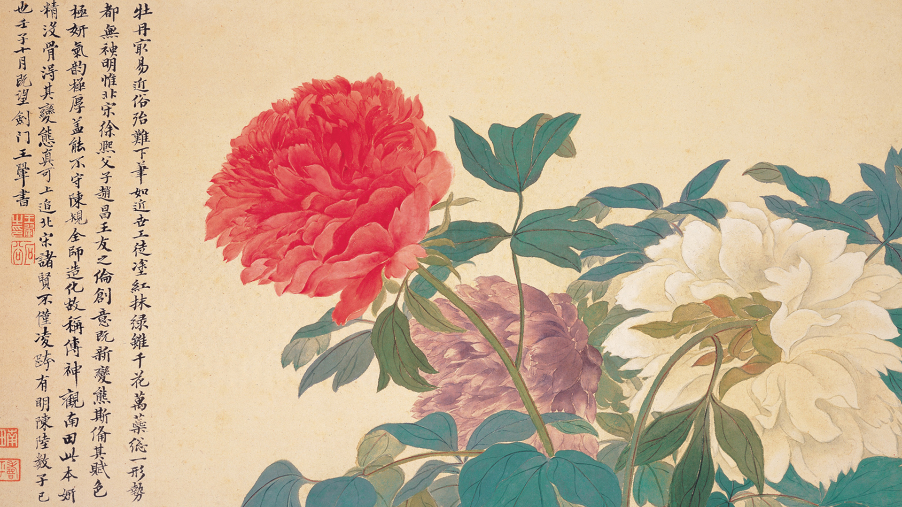

Gongbi, or “Meticulous Painting”, is a traditional Chinese realistic painting. Chinese painting is one of the oldest continuous artistic traditions in the world. Gongbi has been especially favoured for its realistic technique and bold colouring. The technique calls for brushstrokes to “be as detailed as detailed can be”, and uses highly detailed brushstrokes that delimit details very precisely and without independent or expressive variation. In addition, it tries to strike a balance between artistic expression and vitality, is often highly coloured and usually depicts figural or narrative subjects.
The very first Gongbi paintings were made over 2000 years ago during the Han Dynasty (206BC – 220AD), a period that brought about both properity and political stability and allowed for a climate that would nurture a significant development in the advancement of Chinese arts. Gongbi painting reached its peak popularity in Chinese culture during the Tang and Song Dynasties (7th—13th Century). At this time, it was de rigueur for Chinese royalty to collect and commission Gongbi works; they were a status symbol for people of the highest social standing, with many collectors actually featured in the works themselves.
If we are to compare Gongbi painting with a Western painting equivalent, there is a loose similarity with religious icon paintings. Traditionally, there are particular ways of painting subjects of nature that were taught and passed down through the generations, and little room for the artist’s own personal expression in how the works were painted. Gongbi painting is based on the idea that there are very specific perceived ideals within nature, and it is the job of the artist to pay homage to these ideals using a rigid pre-set visual language.